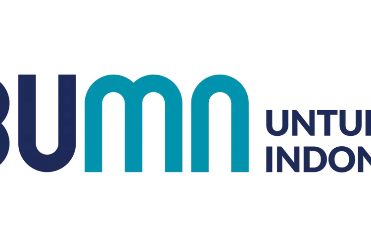
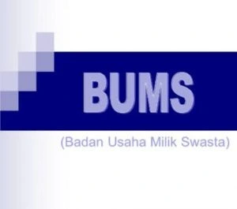
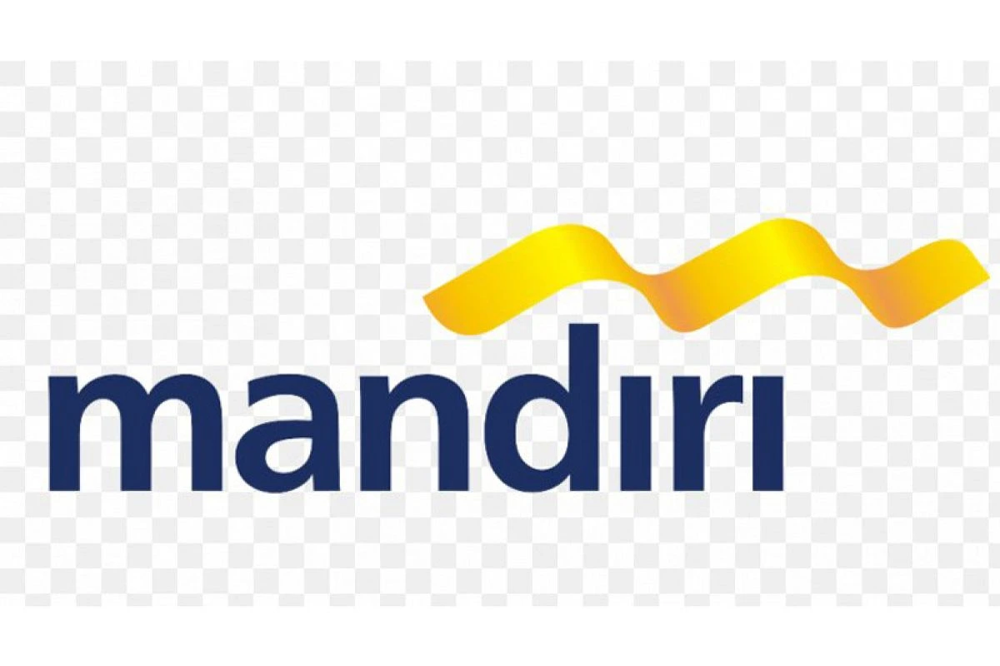
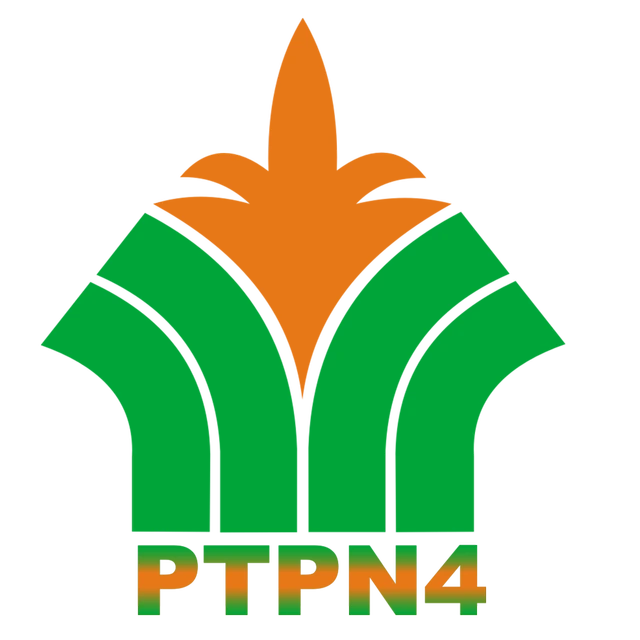
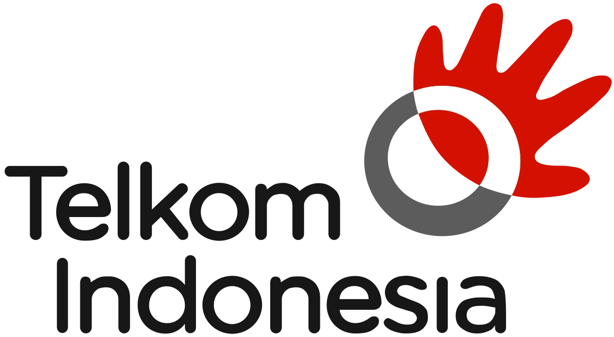

FAKULTAS PSIKOLOGI
Membentuk generasi digital unggul, kreatif, dan adaptif menghadapi era industri 5.0
Membentuk generasi digital unggul, kreatif, dan adaptif menghadapi era industri 5.0













Tentang Fakultas Psikologi
Fakultas Psikologi berkomitmen untuk menjadi pusat keunggulan dalam menangani tantangan psikologis di masyarakat.Misi utama kami adalah mengembangkan sumber daya manusia berkualitas tinggi yang terampil,berprestasi,dan inovatif,terutama dalam bidang Socio-Technopreneurship.

Menjadi pusat pembelajaran dan pengembangan psikologi yang unggul dalam bidang sosiotechnopreneurship dalam menghasilkan lulusan yang inovatif dan adaptif berdaya saing internasional pada tahun 2030.


Dekan

wakil Dekan 1

Program Studi Diploma Tiga Keperawatan merupakan pendidikan vokasi yang dirancang untuk mencetak perawat profesional dengan keterampilan klinis yang kuat.

Program Studi Sarjana Ilmu Keperawatan adalah sebuah program pendidikan tinggi yang dirancang untuk mempersiapkan mahasiswa menjadi perawat profesional yang kompeten
Berita Terkini
Baca Berita Lainnya
Senin, 20 Oktober 2025
Kampus Terbaik dan Unggul....
Sinergi Pendidikan dan Pemerintah Daerah: UNPRI Perluas Kolaborasi Strategis di Kabupaten Rokan ....

Senin, 20 Oktober 2025
Kampus Terbaik dan Unggul....
Menjadi Arsitek Profesional Melalui Pendidikan Berbasis Desain dan Teknologi di UNPRI....

Senin, 20 Oktober 2025
Kuliah Arsitektur di Kampus....
Mencetak Generasi Digital Unggul Melalui Socio-Technopreneurship di UNPRI ....
Di Fakultas Keperawatan dan Kebidanan, setiap langkah belajar adalah panggilan untuk memberi makna dan harapan bagi kehidupan. Wujudkan perubahan dimulai dari sentuhanmu.
 }})